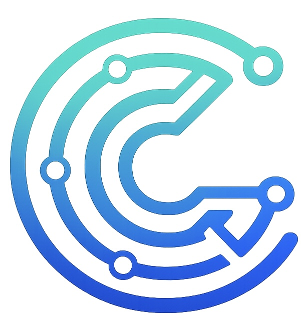

CYBLICOCYBLICO is a technology company building intelligent software, AI-driven platforms, and cloud solutions that close real-world gaps and help businesses move forward with confidence.
Intelligent systems and automation designed to simplify complexity and enable smarter operations.
Secure, scalable cloud architecture and modern DevOps practices for long-term growth.
High-quality software platforms built with modern engineering and performance in mind.
Strategic guidance to help organizations adopt AI, cloud, and modern software confidently.
In today’s fast-evolving world, every challenge presents an opportunity.
CYBLICO exists to fill the gaps between complex problems and intelligent solutions
using AI, cloud platforms, and modern software engineering.
We believe strong teams build strong solutions—and strong solutions drive real progress.
Perspectives on AI, cloud technologies, automation, and the future of software engineering. We share ideas that shape intelligent systems and responsible innovation.
CYBLICO is remote-first and impact-driven. We welcome engineers, thinkers, and builders who want to shape the future of technology.
📧 contact@cyblico.com
🌍 Remote-first · Global delivery